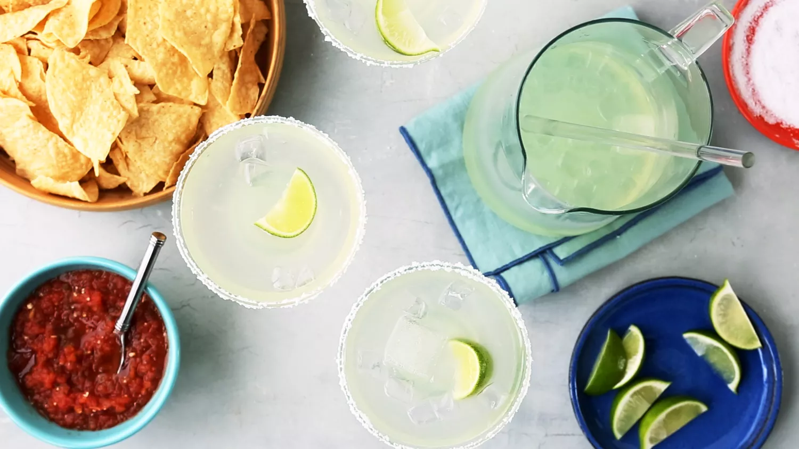

Pitcher Margaritas

Description
Make margaritas in a pitcher with this refreshing recipe. After tweaking several other margarita recipes, I finally found a way to get that classic margarita taste in a pitcher size for parties.
Ingredients
- 3 cups ice
- 2 cups tequila
- 1 cup triple sec
- ¾ cup fresh lime juice
- ¾ cup sweetened lime juice
- kosher salt
- 8 lime wedges
Steps
- Step 1: Combine ice, tequila, triple sec, fresh lime juice, and sweetened lime juice in a large pitcher; stir.
- Step 2: Pour kosher salt onto a plate. Rub the rim of a glass with lime wedge. Dip the rim of the glass into salt; fill the glass with margarita mixture; repeat for each serving.
Home